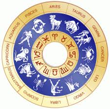
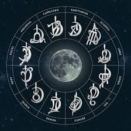

Know Your Future
Know your future
Sun Signs

In astrology language, your Sun sign dictates your zodiac personality.
Sun sign is easy to determine, through your day and month of birth.
Moon Signs

In astrology language, your Sun sign dictates your zodiac personality.
Sun sign is easy to determine, through your day and month of birth.